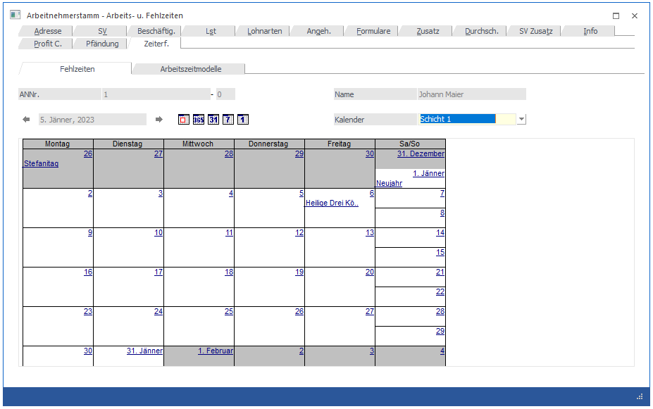
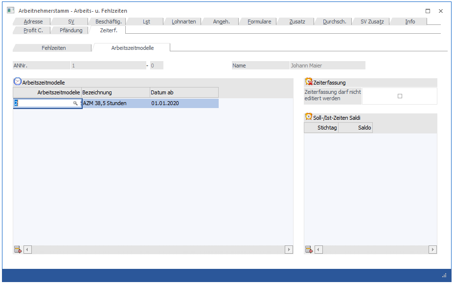
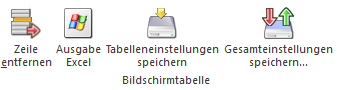

In diesem Fenster, das über den Menüpunkt
1 Stammdaten
1 Arbeitnehmer
1 Arbeitnehmerstamm
oder Schnellaufruf
1 STRG + A
1 Register Arbeitnehmerstamm - Zeiterfassung
aufgerufen wird, können die Fehlzeiten des Arbeitnehmers abgerufen werden.
Das Register Zeiterfassung ist in zwei Unterregister unterteilt:
ü Fehlzeiten
Im Register
Fehlzeiten werden in einer Kalenderansicht alle Fehlzeiten (Krank, Urlaub etc.)
dargestellt.
ü Arbeitszeitmodelle
Im Register
Arbeitszeitmodelle können zusätzliche Einstellungen für die Zeiterfassung
vorgenommen werden.
Register Fehlzeiten

Standardmäßig wird das aktuelle Abrechnungsmonat (abhängig von den Abrechnungsparametern) in der Monatsübersicht angezeigt, wobei links oben der aktuelle Tag (abhängig von der Systemsteuerung) ausgewählt ist. Die Ansicht des Kalenders kann ebenfalls umgestellt werden, wobei es folgende Möglichkeiten gibt:
Jahresansicht - es wird das gesamte Jahr angezeigt, wobei immer das aktuelle Abrechnungsjahr angezeigt wird. "Normale" Arbeitstage werden Gelb, Wochenenden werden in Blau, Feiertage werden in Rot und "nicht vorhandene Tage" werden in Orange dargestellt. Bei Tagen, wo bereits eine Fehlzeit hinterlegt ist, wird die Grafik aus dem Fehlzeitenstamm angezeigt (ist in den Fehlzeiten keine Grafik hinterlegt, wird ein X angedruckt). Durch einen Klick auf einen Tag kann eine neue Fehlzeit erfasst werden, wird der Klick auf einen Tag gemacht, wo bereits eine Fehlzeit hinterlegt ist, dann kann der Eintrag geändert werden.
Monatsansicht - es wird das gesamte Monat angezeigt, wobei immer das Monat angezeigt wird, das der aktuellen Systemeinstellung entspricht. Die beim AN eingetragenen Fehlzeiten werden durch einen blau unterstrichenen Eintrag markiert. Wenn dieser Eintrag angeklickt wird, wird die Fehlzeitenerfassung geöffnet, wo der gespeicherte Eintrag bearbeitet werden kann. Wird auf einen Tag geklickt, kann auch eine neue Fehlzeit erfasst werden.
Wochenansicht - es wird immer nur eine Woche angezeigt, wobei immer die Kalenderwoche angezeigt wird, in der sich der aktuelle Tag (Systemdatum) befindet. Die beim AN eingetragenen Fehlzeiten werden durch einen blau unterstrichenen Eintrag markiert. Wenn dieser Eintrag angeklickt wird, wird die Fehlzeitenerfassung geöffnet, wo der gespeicherte Eintrag bearbeitet werden kann.
Tagesansicht - es wird der aktuelle Tag (Systemdatum) angezeigt.
Der aktive Button (Jahresansicht, Monatsansicht, Wochenansicht oder Tagesansicht) wird benutzerspezifisch gespeichert. D.h. wenn die Fehlzeiten im AN-Stamm das nächste Mal aufgerufen werden, wird die zuletzt verwendete Einstellung wieder angezeigt.
Heute - durch Anklicken dieses Buttons wird - je nachdem, welche Ansicht gewählt wurde - der aktuelle Tag (Systemdatum), die Woche mit dem aktuellen Tag, das Monat mit dem aktuellen Tag oder das Jahr mit dem aktuellen Tag angezeigt.
Mit den Buttons und kann - gemäß der Ansicht - zwischen den einzelnen Tagen, Wochen, Monaten oder Jahren geblättert werden.
Ø Kalender
Über das Feld Kalender kann die Schicht ausgewählt werden, in der der AN standardmäßig arbeitet. Damit kann gesteuert werden, welche Arbeitszeiten der AN hat. Die Schichten werden über den Menüpunkt Stammdaten/Kalender angelegt, wobei hier auch mehrere Schichten verwaltet werden können.
Ø Statuszeile
In der Statuszeile wird immer der aktuelle Resturlaub (bzw. der Urlaub laufende Summe) per Ende der aktuellen Abrechnungsperiode angezeigt.
Register Arbeitszeitmodelle
Im Register Arbeitszeitmodelle befindet sich eine Übersicht über die hinterlegten Arbeitszeitmodelle für den jeweiligen Mitarbeiter bzw. können Arbeitszeitmodelle entsprechend hinterlegt werden.

Arbeitszeitmodelle
Ø Arbeitszeitmodelle
Über den Matchcode bzw. die Autovervollständigung kann ein bestehendes Arbeitszeitmodell ausgewählt werden. Die Arbeitszeitmodelle werden im WinLine Info unter dem Menüpunkt SMART/Stammdaten/Arbeitszeitmodelle angelegt.
Hinweis:
Das Arbeitszeitmodell ist für die Arbeitszeitprüfung relevant.
Ø Bezeichnung
Die Bezeichnung wird aus dem ausgewählten Arbeitszeitmodells angedruckt und ist nicht editierbar.
Ø Datum
Hier wird das Gültigkeitsdatum des Arbeitszeitmodelles eingetragen.
Zeiterfassung
Ø Zeiterfassung darf nicht editiert werden
Über diese Checkbox kann gesteuert werden, ob der Mitarbeiter die Berechtigung hat, seine eigene Zeiterfassung ohne eine Korrekturanfrage zu editieren.
Soll-/Ist-Zeiten Saldi
In diesem Bereich können die Vorwerte bzw. Saldi aus Vorprogrammen bzw. "Abschöpfungen" (in der Lohnverrechnung ausbezahlte Stunden) für die Zeiterfassung eingetragen werden.
Ø Stichtag
Eingabe des Stichtages ab wann der Saldo gerechnet werden soll.
Hinweis:
Hier sollte immer der Letzte der Periode hinterlegt werden.
Ø Saldo
Eingabe des Saldos bzw. der Stunden aus den Vorprogrammen bzw. des Saldos, der ab dem Stichtag gelten soll.
Tabellenbuttons

Ø Zeile entfernen
Mit dem Button können Arbeitszeitmodell-Zeilen bzw. Ist-Zeiten Saldi aus der jeweiligen Tabelle gelöscht werden.
Ø Ausgabe Excel
Der Inhalt der Arbeitnehmergruppen-Tabelle kann in eine Excel-Tabelle ausgegeben werden.
Ø Tabelleneinstellungen speichern
Die Spalten einer Tabelle können grundsätzlich an beliebige Positionen verschoben, bzw. in der Breite entsprechend angepasst werden. Durch Anwahl des Buttons "Tabelleneinstellungen speichern" werden die Einstellungen benutzerspezifisch gespeichert und bei dem nächsten Aufruf des Programmpunktes wieder vorgeschlagen.
Ø Gesamteinstellungen speichern
Im Gegensatz zu "Tabelleneinstellungen speichern" können mit "Gesamteinstellungen speichern" mehrere Tabellenaufbauten gespeichert und nach Wunsch geladen werden. Zusätzlich werden Sonderfunktionen der Tabelle (z.B. "Spalte gruppieren") ebenfalls bei der Speicherung bedacht.